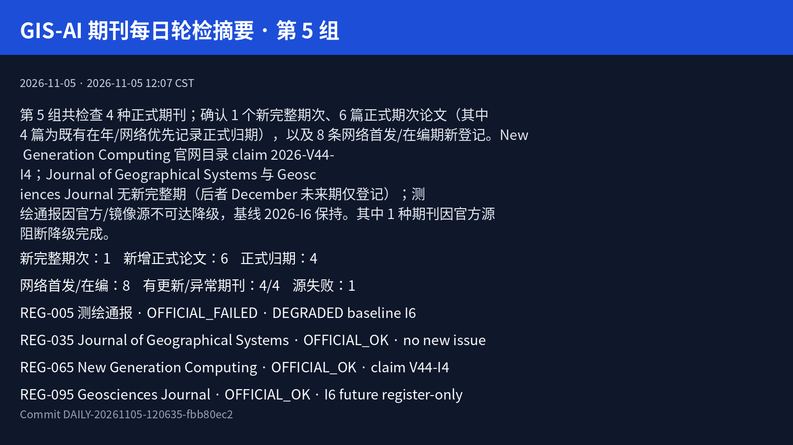

New Generation Computing · 2026-V44-I4
Springer 官网 Volume 44, Issue 4（November 2026）显示“6 articles in this issue”，解析 6 篇，与 Crossref 一致。
官方期次目录link.springer.com · 2026-11-05 12:07 CST · 一级完整性证据
本简报收录正式论文 6 篇（均含摘要抽屉，优先账本/Crossref/官方页）。
第 5 组共检查 4 种正式期刊；确认 1 个新完整期次、6 篇正式期次论文（其中 4 篇为既有在年/网络优先记录正式归期），以及 8 条网络首发/在编期新登记。New Generation Computing 官网目录 claim 2026-V44-I4；Journal of Geographical Systems 与 Geosciences Journal 无新完整期（后者 December 未来期仅登记）；测绘通报因官方/镜像源不可达降级，基线 2026-I6 保持。其中 1 种期刊因官方源阻断降级完成。
| 期刊 | 焦点期次 | 新完整期 | 新正式文 | 归期 | OF | 源健康 | 结果 |
|---|---|---|---|---|---|---|---|
| REG-005 测绘通报 | 2026-I6 | 0 | 0 | 0 | 0 | OFFICIAL_CONNECTION_FAILED_MIRROR_SHELL_ONLY | DEGRADED |
| REG-035 Journal of Geographical Systems | 2026-V28-I3 | 0 | 0 | 0 | 1 | OFFICIAL_PAGE_OK_VIA_PLAYWRIGHT | COMPLETED |
| REG-065 New Generation Computing | 2026-V44-I4 | 1 | 6 | 4 | 1 | OFFICIAL_PAGE_OK_VIA_PLAYWRIGHT | COMPLETED |
| REG-095 Geosciences Journal | 2026-V30-I5 | 0 | 0 | 0 | 6 | OFFICIAL_PAGE_OK_VIA_PLAYWRIGHT | COMPLETED |

Springer 官网 Volume 44, Issue 4（November 2026）显示“6 articles in this issue”，解析 6 篇，与 Crossref 一致。
官方期次目录link.springer.com · 2026-11-05 12:07 CST · 一级完整性证据
本简报收录正式论文 6 篇（均含摘要抽屉，优先账本/Crossref/官方页）。
New Generation Computing · FORMAL_ISSUE
Yuki Kondo; Norimichi Ukita
官方论文页面link.springer.com · 2026-11-05 12:07 CST · 论文身份与出版状态证据 DOIdoi.org · 2026-11-05 12:07 CST · 规范化论文身份
论文题名
PBSR: Pseudo-Burst Super-Resolution via Zero-Shot Novel View Synthesis
Burst super-resolution (BSR) achieves higher reconstruction fidelity than single-image super-resolution by aggregating sub-pixel information from multiple frames. However, it requires a burst of frames captured under near-static conditions, and such frames are unavailable for single photographs or archival images. We propose Pseudo-Burst Super-Resolution (PBSR), which brings BSR-style reconstruction to the single-image input setting by synthesizing pseudo-burst frames via zero-shot novel view synthesis (NVS). PBSR first generates pseudo-burst frames with realistic parallax using a viewpoint sampling strategy calibrated to the pixel-shift distribution of real burst datasets. The frames are then processed by a BSR backbone equipped with a geometry-aware alignment module that reuses the NVS camera parameters and estimated depth. While the NVS stage is zero-shot, the backbone is fine-tuned with an artifact-aware adaptation so that it can exploit the synthesized frames despite their generative artifacts. Experiments on the BurstSR dataset show that PBSR consistently improves in PSNR, SSIM, and LPIPS over the single-frame baseline with the same reconstruction backbone.
New Generation Computing · FORMAL_ISSUE
Tomoki Ono; Kazumasa Shinagawa; Takeshi Nakai; Yohei Watanabe; Mitsugu Iwamoto
官方论文页面link.springer.com · 2026-11-05 12:07 CST · 论文身份与出版状态证据 DOIdoi.org · 2026-11-05 12:07 CST · 规范化论文身份
论文题名
Single-Shuffle Card-Based Protocols for Any Boolean Circuit with Six Cards per Gate
Card-based protocols perform secure computation using physical playing cards, and their efficiency is primarily evaluated by two metrics: the number of cards and the number of shuffles. In this paper, we present three new card-based protocols that reduce the number of cards. The first protocol supports any Boolean circuit and decreases the number of cards. The second protocol extends the first to a committed-format version, while the third is specialized for Boolean circuits without a branched input, achieving an even smaller number of cards. All the proposed protocols are based on Yao’s garbled-circuit framework, similar to previous single-shuffle card-based protocols. Our main contribution is a novel encoding method that represents the truth table of each Boolean gate with fewer cards than existing schemes. Consequently, our protocols require only six cards per gate in a single-shuffle execution, providing a significant improvement in efficiency over prior work. Furthermore, by incorporating the card-based free-XOR introduced by Manabe–Shinagawa, we can further reduce the number of cards in certain configurations.
New Generation Computing · FORMAL_ASSIGNMENT
Subaru Kimura; Ryota Tanaka; Shumpei Miyawaki; Jun Suzuki; Keisuke Sakaguchi
官方论文页面link.springer.com · 2026-11-05 12:07 CST · 论文身份与出版状态证据 DOIdoi.org · 2026-11-05 12:07 CST · 规范化论文身份
论文题名
Empirical Analysis of Goal Hijacking in Large Vision-Language Models via Visual Prompt Injection
In this study, we explore visual prompt injection (VPI), a method that exploits the ability of large vision-language models (LVLMs) to follow instructions embedded within input images. LVLMs, such as GPT-4V, are designed to interpret and respond to visual prompts. Although this capability enables valuable applications, it introduces substantial security risks. To address this issue, we propose a new VPI method called “goal hijacking via visual prompt injection” (GHVPI). This method redirects LVLMs from their original execution task to an alternative task specified by an attacker. Our quantitative analysis reveals that GPT-4V is vulnerable to GHVPI, with an attack success rate of 15.8%, posing a significant security risk. Our results also reveal that GHVPI success relies on the character recognition and instruction-following capabilities of LVLMs. These findings highlight a critical vulnerability, raising concerns regarding the secure deployment of LVLMs in practical applications. Future research should prioritize developing robust mitigation strategies to address these vulnerabilities and facilitate the secure integration of LVLMs into sensitive systems. By addressing this underexplored security challenge, our research aims to encourage further research into the responsible use of LVLMs.
New Generation Computing · FORMAL_ASSIGNMENT
Hien D. Nguyen; Chiaki Sakama
官方论文页面link.springer.com · 2026-11-05 12:07 CST · 论文身份与出版状态证据 DOIdoi.org · 2026-11-05 12:07 CST · 规范化论文身份
论文题名
Feature Learning by Induction
This paper provides an empirical study of feature learning based on induction, presented as a foundational proof-of-concept for bridging raw sensory input and symbolic reasoning. We first encode image data into first-order expression. We then compute their least generalization to extract a common pattern of input data. Next, we introduce two different methods for feature learning. The frequency method extracts pixel values that appear most frequently in each location. The average method computes the average values of the pixels in each location. They are also applied to convolutional methods for data with random location. We perform experiments using the MNIST and CIFAR-10 datasets and show that the proposed methods successfully capture features from training data and classify test data in about 90% accuracies with the MNIST datasets and more than 80% with the CIFAR-10 dataset. Moreover, we show that the proposed method outperforms the convolutional neural network approach with LeNet-5 architecture on small data. The results of this paper show potential for induction in feature learning or pattern recognition from raw data. In particular, we verify the utility of inductive learning on small data. While these results demonstrate the potential for inductive learning to capture human-readable features, they are positioned as a preliminary validation of symbolic properties. The current study serves to identify the prerequisites for interpretable machine learning; however, transitioning to high-risk or safety-critical XAI domains will require future integration of higher-fidelity representations and domain-specific knowledge to meet rigorous real-world demands.
New Generation Computing · FORMAL_ASSIGNMENT
B. Suganya; M. L. Valarmathi
官方论文页面link.springer.com · 2026-11-05 12:07 CST · 论文身份与出版状态证据 DOIdoi.org · 2026-11-05 12:07 CST · 规范化论文身份
论文题名
Graph-Driven Thematic Review Summarization with Knowledge Retention and User Engagement Using Explainable Personalization with LLMs
Review summarization performs a significant reduction of lengthy user reviews to short summaries, specifying the major opinions about the product or service. Users face difficulty analyzing large volumes of unstructured online reviews. These challenges are overcome by introducing a comprehensive approach for graph-guided thematic review summarization that enhances the analysis of multi-domain reviews with personalization, interpretability, and efficiency as its core attributes. This research introduces text-derived distilling relational spectral graph-based segmentation (TDRSGS) with the Motorbike Courier Optimization algorithm (MCO), efficiently identifies and groups semantically similar review themes for accurate summarization. The large language model, primarily GPT-4, generates concise theme-level and global summaries while preserving semantic insights and reducing redundancy. The transformer engagement predictor (TEP) tailors summaries to fit the user’s preferences, thereby providing personalised and context-aware recommendations. An exact local interpretable model-agnostic explanation increases the quality of trust and user understanding. The experimental evaluation on a variety of datasets, including Amazon, Flipkart, Yelp, TripAdvisor, IMDB, Goodreads, and RateMDs, shows that the model’s performance is excellent, getting a BERTScore of 97.3, ROUGE-L of 98.4, and accuracy of 98.7%, all coupled with lower inference time and parameter usage than the prevailing models. These results show that the proposed framework provides efficient, interpretable, and personalized review summarization with superior performance across multiple benchmark datasets.
New Generation Computing · FORMAL_ASSIGNMENT
K M Poonam; Tene Ramakrishnudu
官方论文页面link.springer.com · 2026-11-05 12:07 CST · 论文身份与出版状态证据 DOIdoi.org · 2026-11-05 12:07 CST · 规范化论文身份
论文题名
Enhancing Stance Detection with Fuzzy Logic and Bidirectional Long Short-Term Memory Networks
Traditional opinion analysis methods frequently reduce online discussions to simplistic categories, such as favor, against, and none. This oversimplification fails to capture the nuances of opinions, such as the intensity of feelings or the degree to which a stance leans toward favor or against. To address this limitation, a new method called SFLBiL is proposed, which leverages fuzzy logic and BiLSTM to create more nuanced categories for opinions. Specifically, token-based fuzzy matching scores between tweet pairs are transformed into linguistic memberships via fuzzy membership functions and inference rules, which are fused with glove word embeddings and passed through a BiLSTM network that jointly captures ordinal class structure and sequential context. This allows for a more accurate understanding of people’s views, especially in the context of ordered-class classification. The performance of the proposed model is evaluated on two new datasets and the benchmark SemEval-2016 TaskA dataset. The SFLBiL model achieves consistent improvements over state-of-the-art (SOTA) models, with accuracy and F1-score improvements of 4.65% and 0.0464 on D1, 6.54% and 0.0653 on D2, and 1.12% and 0.0322 on the SemEval-2016 TaskA benchmark.
本批新登记 8 条（测绘通报 0、JGS 1、NGC 1、Geosciences Journal 6）：测绘通报无发现；JGS Online First；NGC 未来期 V45-I1；Geosciences Journal 未来期 I6 + Online First。上述条目不作为完整期次证据；已在账本中的条目按去重抑制，不重复简报。
Journal of Geographical Systems · ONLINE_FIRST
Linyan Luo; Tsutomu Suzuki
官方论文页面link.springer.com · 2026-11-05 12:07 CST · 论文身份与出版状态证据 DOIdoi.org · 2026-11-05 12:07 CST · 规范化论文身份
论文题名
Accounting for terrain slope in transport policy: a spatial machine learning approach to accessibility and carbon emissions evaluation
Improving accessibility is widely recognized as an effective strategy for reducing car dependence and promoting low-carbon mobility. However, accessibility-oriented policies may generate different carbon mitigation outcomes where terrain constrains travel behavior and modal substitution. This study develops a terrain-sensitive accessibility-carbon framework incorporating neighborhood slope. By integrating geographically weighted random forest feature importance, the framework identifies key factors influencing low-carbon transport across different slope neighborhoods and estimates the carbon reduction potential of terrain-constrained accessibility improvements, providing differentiated strategies for achieving both low-carbon mobility and high accessibility. Using Chengdu and Chongqing as case studies representing relatively flat and mountainous urban conditions, the analysis shows that dominant factors shift from socio-demographic characteristics to transport infrastructure, with a more pronounced transition in Chongqing. Policy simulations compare bike sharing, e-bike sharing, and minibus service as terrain-sensitive accessibility interventions. Bike sharing performs best in flat, transit-served areas, e-bike sharing in moderate slope neighborhoods, and minibus service in steep or transit deficient areas. Optimized deployment increases destination accessibility by approximately 18% in Chengdu and 19% in Chongqing, while reducing transport carbon emissions by only 801.04 kgC/h and 350.61 kgC/h, respectively. These findings indicate that shared-mobility and feeder-service interventions substantially improve accessibility, while greater carbon reductions will require complementary operational, pricing, and demand-management measures.
New Generation Computing · ONLINE_FIRST
S. Thivaharan; G. Srivatsun
官方论文页面link.springer.com · 2026-11-05 12:07 CST · 论文身份与出版状态证据 DOIdoi.org · 2026-11-05 12:07 CST · 规范化论文身份
论文题名
A Deep Semantic Alignment Framework with Cross-Channel Code-Mixed Attention and Multi-granular Graph Encoding for Grading Tamil and Multilingual YouTube Comments
Sentiment Analysis (SA) classifies text into positive, negative, or neutral categories and is widely used in social media moderation, market research, and behavioral analytics. However, most existing models struggle with multilingual and code-mixed content, especially Tamil-English text that includes transliteration inconsistencies, informal spellings, and limited linguistic resources. To address this gap, this research introduces a Multi-granular Token-level Heterogeneous Graph transformer with Adaptive Revolution Optimization (MTHG-ARO). The system begins with language-aware preprocessing, including token-level language identification, transliteration correction, normalization, and code-mix ratio estimation to reduce noise. Next, multilingual embeddings are generated using IndicBERT (for Tamil) and FastText (for English/German), ensuring cross-lingual semantic alignment. Deeper contextual understanding is achieved through the Cross-Lingual Feature-Attentive Linguistic Signal Encoder (CL-FALSE), which models inter-language relationships, while the Adaptive Multi-modal Gated Fusion with Prompt Learning (AMGF-PL) selectively emphasizes important linguistic cues. Training stability is maintained by the Adaptive Revolution Optimizer (ARO), which uses dynamic inertia control and controlled perturbation to avoid gradient stagnation and improve convergence. Experiments on the DravidianCodeMix-Tamil (DCM-T), German Hate Speech (GHS), and YouTube Comments (YTC) datasets show that MTHG-ARO achieves an average accuracy of 97.83%, outperforming existing models by 4.8%. These results demonstrate that MTHG-ARO captures subtle meanings better, handles linguistic variability more effectively, and provides strong cross-lingual generalization for large-scale sentiment understanding.
Geosciences Journal · ONLINE_FIRST
Tiago D. Martins; Lais M. Ferreira; Alice E. Lueders; Camilla P. Capella; Bianca C. Vieira
官方论文页面link.springer.com · 2026-11-05 12:07 CST · 论文身份与出版状态证据 DOIdoi.org · 2026-11-05 12:07 CST · 规范化论文身份
论文题名
Influence of hydraulic conductivity variability on slope stability modelling in a first-order watershed
In landslide studies, the definition of geotechnical and hydrological parameters provides the basis for deterministic slope-stability modelling. However, their availability and spatial representativeness remain important limitations for watershed-scale applications. This study evaluated the influence of different saturated hydraulic conductivity (K sat ) spatialization approaches on Factor of Safety (FS) estimates using a deterministic slope-stability model in a first-order watershed. A Digital Terrain Model was used to derive morphometric and hydrological parameters, while field measurements of K sat supported three parameterization approaches: morphology-based, inverse distance weighting (IDW), and a single representative value. Instability scenarios were evaluated using a landslide scar inventory, and soil samples from six K sat measurement points were used to characterize particle-size distribution. Among the tested parameter configurations, maximum soil depth and initial groundwater-table depth produced greater differences in model results than K sat spatialization. K sat showed limited spatial variability, with measurements at 30 cm depth spanning from 10⁻³ to 10⁻⁵ m s⁻¹, whereas those at 50 cm were concentrated around 10⁻⁵ m s⁻¹. Higher clay contents with depth at some sampling points may have contributed to the observed decrease in K sat . Overall, within the observed range of K sat variability, a single representative value provided a practical alternative to spatially distributed parameterization in the studied first-order watershed. These findings are applicable to first-order watersheds where shallow landsliding is recurrent; broader applications involving greater geomorphological diversity and different predominant slope processes may require K sat characterization across a wider range of geomorphological compartments.
Geosciences Journal · ONLINE_FIRST
Muhammad Altin Massinai; Andri Moh. Wahyu Laode; Muhammad Fawzy Ismullah Massinai; Rezky; Musawwir; Muhammad Ridwan; Alif Amanullah
官方论文页面link.springer.com · 2026-11-05 12:07 CST · 论文身份与出版状态证据 DOIdoi.org · 2026-11-05 12:07 CST · 规范化论文身份
论文题名
Low-cost passive seismic imaging for geothermal characterization and seismic site-response assessment: a HVTFA approach
Mount Bora in Central Sulawesi, Indonesia, represents a promising, underexplored geothermal field located within a tectonically active zone. This study introduces a low-cost, non-invasive approach using Horizontal-to-Vertical Time–Frequency Analysis (HVTFA) for integrated geothermal characterization and seismic site-response assessment. A total of 25 microtremor measurements were collected across the study area, of which 24 produced HVTFA-derived ellipticity curves that satisfied the adopted clarity and reliability criteria. These curves were used to extract key site-characterization parameters, including the fundamental frequency (f0), the HVTFA-derived relative index (Kg), calculated from the ellipticity peak amplitude and fundamental frequency, and the average shear-wave velocity in the upper 30 m (Vs30). HVTFA was applied to address spectral instability commonly encountered in classical HVSR analysis, particularly in geologically complex environments. Rayleigh wave ellipticity inversion was then used to derive 1D Vs profiles and construct interpolated 2D cross-sections. The results reveal pronounced lateral heterogeneity in subsurface conditions, with zones of relatively low Vs and locally elevated Kg values concentrated in the southern sector near geothermal manifestations. These areas show relatively low Vs and locally elevated Kg values that may reflect spatial variations in subsurface conditions associated with geothermal processes. In contrast, higher Vs and f0 values in the northern and eastern parts of the study area indicate more competent subsurface materials with relatively stiffer subsurface conditions. The integrated HVTFA framework provides a low-cost framework for characterizing shallow subsurface heterogeneity and identifying zones that may be associated with geothermal influence, and supports microzonation efforts in volcanically and tectonically dynamic environments.
Geosciences Journal · ONLINE_FIRST
Bongseok Jeong; Sooyeon Han; Sunmin Lee; Moung-Jin Lee
官方论文页面link.springer.com · 2026-11-05 12:07 CST · 论文身份与出版状态证据 DOIdoi.org · 2026-11-05 12:07 CST · 规范化论文身份
论文题名
PLS-SEM analysis of landslide susceptibility factors
Landslide risk assessment is a core research field for landslide risk management and loss mitigation, and recent studies have increasingly employed artificial intelligence (AI)-based models. However, such models attribute variable importance only after model fitting, offering limited support for deciding which environmental variables should be prioritized for mitigation. Accordingly, this study applied Partial Least Squares Structural Equation Modeling (PLS-SEM), which specifies variable relationships a priori and estimates them within an explicit structural framework. For the Chungju–Jecheon region of Korea, eight candidate latent variables were defined—terrain morphology, terrain position, terrain ruggedness, hydrological concentration, hydrological flow, precipitation, soil characteristics, and forest characteristics—and a PLS-SEM model was constructed to analyze the structural relationships between the Landslide Susceptibility Index (LSI) and these variables. Model evaluation identified two final models, in both of which terrain morphology and soil characteristics were consistently the two dominant influences on the LSI, though their order varied. Model 1, comprising terrain morphology, soil characteristics, and forest characteristics, yielded R² = 0.444, whereas Model 2, in which forest characteristics were replaced by precipitation, showed slightly lower explanatory power (R² = 0.394). Explanatory power remained close to, but below, the moderate threshold, and categorical factors such as geological structure and land cover, together with the dynamic characteristics of precipitation, were not sufficiently captured. Future work should integrate static susceptibility with dynamic triggering, couple statistical and physically based models, and perform spatiotemporal and transfer validation across watersheds, thereby enhancing the reliability and practical applicability of the model.
Geosciences Journal · ONLINE_FIRST
Suhyun Kim; Chang Hwan Kim; Kiho Yang
官方论文页面link.springer.com · 2026-11-05 12:07 CST · 论文身份与出版状态证据 DOIdoi.org · 2026-11-05 12:07 CST · 规范化论文身份
论文题名
Relative contributions of sediment sources in the northern Ulleung Basin, East Sea based on clay mineral tracers since the late Pleistocene
This study evaluates the provenance and relative contributions of terrigenous sediments during the late Pleistocene–Holocene using clay mineral compositions from the northern Ulleung Basin, East Sea. The East Sea is highly sensitive to sea-level fluctuations, which alter ocean circulation and modulate the Chinese loess influx driven by the East Asian winter monsoon. From the glacial period (> 14.5 ka) to the Holocene (0–11.5 ka), smectite content increased from an average of 26.9 wt% to 47.7 wt%, whereas illite, kaolinite, and chlorite decreased. A marked increase in smectite during the late glacial period (14.5–11.5 ka) indicates enhanced input of sediments derived from Japan rivers (smectite ~ 70 wt%), consistent with current-driven transport through the Tsugaru Strait in response to sea-level rise. During the glacial period, Chinese loess transported by the East Asian winter monsoon was the dominant sediment source. From ~ 14.5 ka onward, continuous smectite supply via bottom currents became significant, although clay mineral compositions remained modulated by monsoon variability. These results indicate a shift in sediment supply to the northern Ulleung Basin from a Chinese loess-dominated system to one increasingly influenced by current-driven transport with rising sea-level. Clay mineral compositions therefore provide a useful proxy for assessing the relative contributions of aeolian and oceanic processes to sediment distribution.
Geosciences Journal · ONLINE_FIRST
Hyun‑Kwon Do; Suyeong Noh; Hakyung Cho; Sung-Wook Jeen
官方论文页面link.springer.com · 2026-11-05 12:07 CST · 论文身份与出版状态证据 DOIdoi.org · 2026-11-05 12:07 CST · 规范化论文身份
论文题名
Predicting long-term environmental changes from the perspective of high-level radioactive waste disposal sites: a comparative review of national programs
Geological disposal is widely regarded as a viable long-term management strategy for high-level radioactive waste. Because repository performance is assessed over timescales extending from tens of thousands to, in some cases, up to one million years, potential environmental change is an important consideration in repository safety assessment. Future climatic, geological, hydrological, and ecological processes may influence groundwater flow systems, radionuclide transport pathways, biosphere conditions, and the performance of natural and engineered barriers. Consequently, national repository programs have developed various approaches to incorporate long-term environmental evolution into safety assessments. This review examines how long-term environmental change is addressed in geological disposal programs in Sweden, Finland, Switzerland, France, Canada, and Japan. The review compares national approaches to representing future environmental conditions and discusses common challenges associated with environmental evolution, biosphere and surface-system representation, integration of geosphere, biosphere, and engineered systems, and uncertainty over geological timescales. Although the reviewed programs differ in geological setting, repository concept, climatic history, and regulatory framework, several common themes emerge. Long-term environmental assessments employ scenario-based representations of future conditions, consider interactions among environmental and repository-system processes, and apply structured approaches for addressing uncertainty. At the same time, the environmental processes emphasized in safety assessments vary according to site-specific conditions and programmatic priorities. The reviewed cases suggest that approaches to long-term environmental assessment are shaped by both site-specific considerations and broader assessment objectives. While no single assessment framework is suitable for all repository settings, experience from existing national programs provides useful perspectives for the development of future repository programs and long-term environmental assessment frameworks, including those for Korea.
Geosciences Journal · ONLINE_FIRST
Varun Menon; Amuthavel Ravi; Sreevalsa Kolathayar
官方论文页面link.springer.com · 2026-11-05 12:07 CST · 论文身份与出版状态证据 DOIdoi.org · 2026-11-05 12:07 CST · 规范化论文身份
论文题名
Laboratory simulation of rainfall-induced instability in unsaturated c-ϕ soil slopes using tilting flume: identification of precursor threshold ranges for early warning
Rainfall-induced landslides pose significant geohazard risks, yet their occurrence can be anticipated through systematic instrumentation and historical data analysis. A thorough understanding of geological and geotechnical properties facilitates the identification of critical thresholds, which is essential for the development of landslide early warning systems (LEWS). This study presents experimental findings from a laboratory-simulated rainfall-induced landslide using a custom-designed tilting flume. The investigation focuses on variations in gravimetric moisture content (GMC), excess pore water pressure (EPWP), surface particle motion analyzed via particle image velocimetry (PIV), and the loss of fine content under controlled conditions. Experimental trials were conducted at three soil densities, with rainfall intensities of 150 mm/h and 300 mm/h. Instrumentation placed at the slope face and toe recorded significant variations across all monitored parameters, indicating their suitability for LEWS deployment. In contrast, minimal variations were observed at the heel portion. The analysis establishes a relationship between the relative factor of safety (FOS) degradation and variations in GMC, based on the principles of unsaturated soil mechanics. The results identify key parametric thresholds for landslide prediction and early warning in silty sand slopes. They show that instability in suction-dominated silty sand is governed not by rainfall intensity alone, but by its combined interaction with dry density, suction loss, localized moisture accumulation, EPWP development, and kinematic deformation.
ac8092f9-9ebd-473c-908f-72d88d2b6975DAILY-20261105-120635-fbb80ec2DAILY-20261105